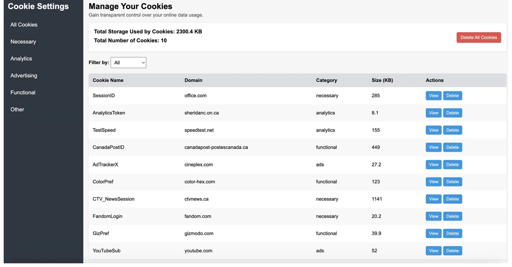
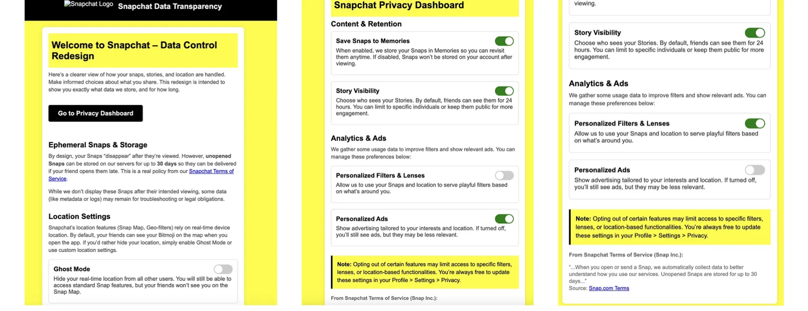

Background背景背景背景ContexteHintergrund
Snapchat Data Transparency is for Snapchat users who want to know what the app keeps and shares about them, and to change it without reading legal text.
Snapchat 数据透明面向想知道 App 保存和分享了自己哪些数据、又不想读法律条文就能修改设置的 Snapchat 用户。
Snapchat 資料透明面向想知道 App 保存和分享了自己哪些資料、又不想讀法律條文就能修改設定的 Snapchat 使用者。
Snapchat データ透明性は、アプリが自分について何を保存し共有しているかを知り、法律の文章を読まずに設定を変えたい Snapchat ユーザーのためのものです。
Transparence des données Snapchat s’adresse aux utilisateurs de Snapchat qui veulent savoir ce que l’appli garde et partage à leur sujet, et le modifier sans lire de texte juridique.
Snapchat-Datentransparenz ist für Snapchat-Nutzer, die wissen wollen, was die App über sie speichert und teilt, und das ändern wollen, ohne juristische Texte zu lesen.
People think snaps disappear, but the app keeps more than they expect人们以为快照会消失，App 保存的却比他们想的多人們以為快照會消失，App 保存的卻比他們想的多スナップは消えると思われているが、アプリは想像以上に保存しているOn croit que les snaps disparaissent, mais l’appli garde plus qu’on ne le penseViele glauben, Snaps verschwinden, doch die App behält mehr als erwartet
Snapchat was chosen because it is a popular social app whose users often do not know how their data is collected, stored and shared. People like it for disappearing messages, yet its Terms of Service and Privacy Policy say snaps and location data can stay on Snapchat’s servers longer than users expect: unopened snaps for up to 30 days. Settings such as location sharing on Snap Map are buried in menus, so it is unclear what is actually shared.
选择 Snapchat，是因为它是一款热门社交应用，用户往往不清楚自己的数据如何被收集、保存和分享。人们喜欢它的“阅后即焚”，但它的服务条款和隐私政策写明，快照和位置信息可能在 Snapchat 服务器上留得比用户以为的更久：未打开的快照最长保留 30 天。Snap Map 位置共享这类设置藏在菜单深处，实际分享了什么很难看清。
選擇 Snapchat，是因為它是一款熱門社群應用，使用者往往不清楚自己的資料如何被收集、保存和分享。人們喜歡它的「閱後即焚」，但它的服務條款和隱私政策寫明，快照和位置資訊可能在 Snapchat 伺服器上留得比使用者以為的更久：未打開的快照最長保留 30 天。Snap Map 位置分享這類設定藏在選單深處，實際分享了什麼很難看清。
Snapchat を選んだのは、人気の SNS でありながら、データがどう収集・保存・共有されるかを利用者がよく知らないアプリだからです。消えるメッセージが好まれていますが、利用規約とプライバシーポリシーには、スナップや位置情報が利用者の想像より長くサーバーに残ることが書かれています。未開封のスナップは最長 30 日です。Snap Map の位置共有などの設定はメニューの奥にあり、実際に何が共有されているのか分かりにくくなっています。
Snapchat a été choisi parce que c’est une appli sociale populaire dont les utilisateurs savent rarement comment leurs données sont collectées, stockées et partagées. On l’aime pour ses messages éphémères, pourtant ses conditions d’utilisation et sa politique de confidentialité indiquent que snaps et données de localisation peuvent rester sur les serveurs plus longtemps qu’on ne le croit : jusqu’à 30 jours pour un snap non ouvert. Des réglages comme le partage de position sur Snap Map sont enfouis dans les menus, si bien qu’on ne sait pas ce qui est vraiment partagé.
Snapchat wurde gewählt, weil es eine beliebte soziale App ist, deren Nutzer oft nicht wissen, wie ihre Daten erfasst, gespeichert und geteilt werden. Man mag sie für verschwindende Nachrichten, doch Nutzungsbedingungen und Datenschutzrichtlinie sagen, dass Snaps und Standortdaten länger auf den Servern bleiben können als erwartet: ungeöffnete Snaps bis zu 30 Tage. Einstellungen wie die Standortfreigabe auf Snap Map stecken tief in Menüs, sodass unklar bleibt, was wirklich geteilt wird.
The brief asked for data control people can see课题要求让人看得见、管得着自己的数据課題要求讓人看得見、管得著自己的資料課題は、目に見えるデータ管理を求めていたLe brief demandait un contrôle des données que l’on peut voirDas Briefing verlangte Datenkontrolle, die man sehen kann
Project 3 of DESN 10799, Contemporary Problems in Interaction Design, starts from digital services that are becoming more closed and hide information about their users. It asks for a way to replace the long legal statement that no one reads: let people opt in and out, and show visually how their data is used and what each choice changes.
DESN 10799《交互设计中的当代问题》的项目 3，从越来越封闭、隐藏用户信息的数字服务出发。它要求替换那份没人读的长篇法律声明：让人可以选择加入或退出，并用可视化的方式展示数据如何被使用、每个选择会改变什么。
DESN 10799《互動設計中的當代問題》的專案 3，從越來越封閉、隱藏使用者資訊的數位服務出發。它要求取代那份沒人讀的長篇法律聲明：讓人可以選擇加入或退出，並用視覺化的方式展示資料如何被使用、每個選擇會改變什麼。
DESN 10799「インタラクションデザインの現代的課題」のプロジェクト 3 は、ますます閉じていき、利用者の情報を隠すデジタルサービスを出発点にしています。誰も読まない長い法律文書に代わるものとして、オプトインとオプトアウトを選べ、データがどう使われ、選択で何が変わるかを視覚的に示す方法を求めました。
Le projet 3 de DESN 10799, Contemporary Problems in Interaction Design, part de services numériques de plus en plus fermés qui cachent ce qu’ils savent de leurs utilisateurs. Il demande de remplacer le long texte juridique que personne ne lit : permettre d’accepter ou de refuser, et montrer visuellement comment les données sont utilisées et ce que change chaque choix.
Projekt 3 im Kurs DESN 10799, Contemporary Problems in Interaction Design, geht von digitalen Diensten aus, die immer geschlossener werden und Informationen über ihre Nutzer verbergen. Gefragt war ein Ersatz für die lange Rechtserklärung, die niemand liest: Menschen sollen zustimmen oder ablehnen können und visuell sehen, wie ihre Daten genutzt werden und was jede Wahl ändert.
It is for young adults who post every day, and for older users who find the settings hard它面向每天发帖的年轻人，也面向觉得设置很难的年长用户它面向每天發文的年輕人，也面向覺得設定很難的年長使用者毎日投稿する若者と、設定を難しく感じる年上の利用者のためにElle s’adresse aux jeunes adultes qui publient chaque jour et aux utilisateurs plus âgés que les réglages rebutentSie ist für junge Erwachsene, die täglich posten, und für ältere Nutzer, denen die Einstellungen schwerfallen
Snapchat’s main users are young adults, the group the designer belongs to. They want to share moments quickly and keep the fun features. The interviews also included two older users, aged 33 and 52, who use the app to follow family and struggle with technical terms. The redesign is for both: quick control for frequent users, plain language for occasional ones.
Snapchat 的主要用户是年轻人，设计者本人也在其中。他们想快速分享生活，也想保留好玩的功能。访谈还包括两位年长用户，分别是 33 岁和 52 岁，他们用 App 关注家人动态，对技术术语感到吃力。重新设计同时照顾两类人：给常用的人快速的控制，给偶尔使用的人直白的语言。
Snapchat 的主要使用者是年輕人，設計者本人也在其中。他們想快速分享生活，也想保留好玩的功能。訪談還包括兩位年長使用者，分別是 33 歲和 52 歲，他們用 App 關注家人動態，對技術術語感到吃力。重新設計同時照顧兩類人：給常用的人快速的控制，給偶爾使用的人直白的語言。
Snapchat の主な利用者は若い世代で、デザイナー自身もその一人です。彼らはすぐに瞬間を共有したく、楽しい機能も手放したくありません。インタビューには 33 歳と 52 歳の 2 人の年上の利用者も含まれ、家族の近況を見るためにアプリを使い、専門用語に苦労していました。リデザインはその両方のためのものです。よく使う人にはすばやい操作を、たまに使う人には平易な言葉を。
Les principaux utilisateurs de Snapchat sont de jeunes adultes, dont le designer fait partie. Ils veulent partager vite et garder les fonctions ludiques. Les entretiens comptaient aussi deux personnes plus âgées, de 33 et 52 ans, qui suivent leur famille sur l’appli et peinent avec le jargon technique. La refonte vise les deux : un contrôle rapide pour les habitués, un langage simple pour les occasionnels.
Snapchats Hauptnutzer sind junge Erwachsene, zu denen auch der Designer gehört. Sie wollen Momente schnell teilen und die spaßigen Funktionen behalten. Die Interviews umfassten auch zwei ältere Nutzer, 33 und 52 Jahre alt, die der Familie über die App folgen und mit Fachbegriffen kämpfen. Das Redesign ist für beide: schnelle Kontrolle für Vielnutzer, einfache Sprache für Gelegenheitsnutzer.
The intended experience: see the consequence before choosing期望的体验：做选择之前，先看到后果期望的體驗：做選擇之前，先看到後果目指す体験：選ぶ前に、その結果が見えるL’expérience visée : voir la conséquence avant de choisirDas angestrebte Erlebnis: die Folge sehen, bevor man wählt
At sign-up and in settings, people should see right away who can view their snaps, how their location is shared and what happens to messages after they are sent. Each switch carries one line on what turning it off costs, such as fewer location filters, so the choice is informed and quick.
无论是注册时还是在设置里，人们都应该立刻看到：谁能看自己的快照、位置怎样被分享、消息发出后会怎样。每个开关都附一句话，说明关掉它的代价，比如位置滤镜会变少，让选择既有依据又够快。
無論是註冊時還是在設定裡，人們都應該立刻看到：誰能看自己的快照、位置怎樣被分享、訊息送出後會怎樣。每個開關都附一句話，說明關掉它的代價，比如位置濾鏡會變少，讓選擇既有依據又夠快。
登録のときも設定画面でも、誰が自分のスナップを見られるか、位置情報がどう共有されるか、送ったメッセージがその後どうなるかがすぐに分かることを目指しました。各スイッチには、オフにすると何を失うか（位置情報フィルターが減るなど）を 1 行で添え、納得したうえで素早く選べるようにします。
À l’inscription comme dans les réglages, on doit voir tout de suite qui peut voir ses snaps, comment sa position est partagée et ce que deviennent les messages envoyés. Chaque interrupteur porte une ligne sur ce que coûte sa désactivation, par exemple moins de filtres de lieu, pour un choix éclairé et rapide.
Bei der Registrierung und in den Einstellungen sollen Menschen sofort sehen, wer ihre Snaps sehen kann, wie ihr Standort geteilt wird und was mit gesendeten Nachrichten passiert. Jeder Schalter trägt eine Zeile dazu, was das Ausschalten kostet, etwa weniger Standortfilter, damit die Wahl informiert und schnell ist.
Why it matters: consent people do not understand erodes trust为什么重要：看不懂的同意，会消耗信任為什麼重要：看不懂的同意，會消耗信任なぜ大切か：理解されないままの同意は、信頼を損なうPourquoi c’est important : un consentement incompris use la confianceWarum das zählt: Zustimmung, die man nicht versteht, untergräbt Vertrauen
When policies are too long to read, people agree without knowing what they accept, and frequent permission pop-ups train them to tap yes. The project’s rationale was to rebuild trust through transparent controls and lower cognitive load: plain language where the legal jargon was, and switches people can find.
政策长到读不完，人们就会在不知道自己接受了什么的情况下点同意；频繁的权限弹窗也让人习惯性地点“允许”。项目的出发点是通过透明的控制和更低的认知负担来重建信任：把法律术语换成直白的话，把开关放到找得到的地方。
政策長到讀不完，人們就會在不知道自己接受了什麼的情況下點同意；頻繁的權限彈窗也讓人習慣性地點「允許」。專案的出發點是透過透明的控制和更低的認知負擔來重建信任：把法律術語換成直白的話，把開關放到找得到的地方。
ポリシーが長すぎて読めないと、人は何に同意したのか分からないまま同意し、頻繁な許可のポップアップは「許可」を押す癖をつけてしまいます。このプロジェクトの根拠は、透明な操作と認知負荷の軽減で信頼を取り戻すことでした。法律用語を平易な言葉に置き換え、スイッチを見つけやすい場所に置きます。
Quand les politiques sont trop longues pour être lues, on accepte sans savoir quoi, et les fenêtres de permission répétées habituent à dire oui. La démarche visait à rétablir la confiance par des contrôles transparents et une charge cognitive réduite : un langage simple là où régnait le jargon juridique, et des interrupteurs faciles à trouver.
Sind Richtlinien zu lang zum Lesen, stimmen Menschen zu, ohne zu wissen, was sie akzeptieren, und häufige Berechtigungs-Pop-ups gewöhnen sie ans Ja-Tippen. Ziel war, Vertrauen durch transparente Steuerung und weniger kognitive Last zurückzugewinnen: einfache Sprache, wo juristischer Fachjargon stand, und Schalter, die man findet.
Why this form: inside the app, in three layers of detail为什么是这种形式：放进 App 里，分三层细节為什麼是這種形式：放進 App 裡，分三層細節なぜこの形か：アプリの中に、3 段階の詳しさでPourquoi cette forme : dans l’appli, en trois niveaux de détailWarum diese Form: in der App, in drei Detailstufen
The redesign lives in the sign-up flow and the settings screen, where privacy decisions are made, so nobody has to leave the app to understand them. Information comes in three layers: a glanceable label, a one-line explanation, then the full policy text for those who want it. Short sentences and simple on and off switches follow Snapchat’s own clean, modular style.
重新设计放在注册流程和设置页面里，也就是做隐私决定的地方，这样谁都不用离开 App 去弄明白。信息分三层出现：一眼能看懂的标签、一句话的解释，再往下是给想看的人准备的完整政策原文。短句和简单的开关，延续了 Snapchat 自己简洁、模块化的风格。
重新設計放在註冊流程和設定頁面裡，也就是做隱私決定的地方，這樣誰都不用離開 App 去弄明白。資訊分三層出現：一眼能看懂的標籤、一句話的解釋，再往下是給想看的人準備的完整政策原文。短句和簡單的開關，延續了 Snapchat 自己簡潔、模組化的風格。
リデザインは、プライバシーを決める場所である登録フローと設定画面に置き、理解するためにアプリを離れる必要がないようにしました。情報は 3 段階で示します。ひと目で分かるラベル、1 行の説明、そして知りたい人のためのポリシー原文です。短い文とシンプルなオンオフのスイッチは、Snapchat 自身のすっきりしたモジュール型のスタイルに沿っています。
La refonte se loge dans le parcours d’inscription et l’écran des réglages, là où se prennent les décisions de confidentialité, pour que personne n’ait à quitter l’appli pour comprendre. L’information arrive en trois niveaux : un libellé lisible d’un coup d’œil, une explication d’une ligne, puis le texte complet de la politique pour qui le souhaite. Phrases courtes et interrupteurs simples reprennent le style épuré et modulaire de Snapchat.
Das Redesign sitzt im Registrierungsablauf und im Einstellungs-Screen, also dort, wo Datenschutzentscheidungen fallen, damit niemand die App verlassen muss, um sie zu verstehen. Informationen kommen in drei Ebenen: ein Label für den schnellen Blick, eine Erklärung in einer Zeile, dann der volle Richtlinientext für alle, die ihn wollen. Kurze Sätze und einfache Ein-Aus-Schalter folgen Snapchats eigenem klaren, modularen Stil.
Research研究研究リサーチRechercheRecherche
Research combined privacy and behaviour theory with four methods: a heuristic review of the app, a comparison with Instagram and X, five interviews and a three-day diary study.
研究把隐私与行为理论和四种方法结合起来：对 App 的启发式评估、与 Instagram 和 X 的对比、五次访谈，以及为期三天的日记研究。
研究把隱私與行為理論和四種方法結合起來：對 App 的啟發式評估、與 Instagram 和 X 的比較、五次訪談，以及為期三天的日記研究。
リサーチでは、プライバシーと行動に関する理論に、4 つの手法を組み合わせました。アプリのヒューリスティック評価、Instagram と X との比較、5 人へのインタビュー、3 日間の日記調査です。
La recherche a croisé théorie de la vie privée et du comportement avec quatre méthodes : une évaluation heuristique de l’appli, une comparaison avec Instagram et X, cinq entretiens et une étude de journal sur trois jours.
Die Recherche verband Theorien zu Privatsphäre und Verhalten mit vier Methoden: einer heuristischen Evaluation der App, einem Vergleich mit Instagram und X, fünf Interviews und einer dreitägigen Tagebuchstudie.
Four theories explained why people give up on privacy settings四种理论解释了人们为什么放弃管理隐私设置四種理論解釋了人們為什麼放棄管理隱私設定人がプライバシー設定をあきらめる理由を、4 つの理論が説明したQuatre théories expliquent pourquoi on renonce aux réglages de confidentialitéVier Theorien erklärten, warum Menschen Datenschutzeinstellungen aufgeben
- Privacy calculus隐私计算隱私計算プライバシー計算Calcul de la vie privéePrivacy CalculusDinev and Hart (2006): people weigh benefits, such as personalized features, against risks. Clear information lowers the risk they perceive.Dinev 和 Hart（2006）：人们会权衡收益（比如个性化功能）和风险。信息清楚了，感知到的风险就会降低。Dinev 和 Hart（2006）：人們會權衡收益（比如個人化功能）和風險。資訊清楚了，感知到的風險就會降低。Dinev と Hart（2006）：人は個人に合わせた機能などの利点とリスクを比べる。情報が分かりやすいほど、感じるリスクは下がる。Dinev et Hart (2006) : on pèse les bénéfices, comme les fonctions personnalisées, contre les risques. Une information claire réduit le risque perçu.Dinev und Hart (2006): Menschen wägen Nutzen wie personalisierte Funktionen gegen Risiken ab. Klare Informationen senken das wahrgenommene Risiko.
- Self-determination自我决定自我決定自己決定AutodéterminationSelbstbestimmungDeci and Ryan (1985): people need to feel in control. Granular choices, such as precise, approximate or no location, support that need.Deci 和 Ryan（1985）：人需要感到自己说了算。细分的选择，比如精确、大致或不共享位置，正好满足这种需要。Deci 和 Ryan（1985）：人需要感到自己說了算。細分的選擇，比如精確、大致或不分享位置，正好滿足這種需要。Deci と Ryan（1985）：人は自分でコントロールしていると感じたい。正確・おおよそ・オフといった細かな位置情報の選択肢がそれを支える。Deci et Ryan (1985) : on a besoin de se sentir maître de ses choix. Des options fines, comme une position précise, approximative ou désactivée, y répondent.Deci und Ryan (1985): Menschen wollen sich als selbstbestimmt erleben. Feine Optionen wie genauer, ungefährer oder kein Standort stützen das.
- Mental models心智模型心智模型メンタルモデルModèles mentauxMentale ModelleNorman (1983): interfaces must match how people think they work. Settings three or more layers deep cause confusion, so the redesign uses progressive disclosure (Nielsen, 2006).Norman（1983）：界面要符合人们以为它运作的方式。藏在三层以上的设置会让人困惑，所以重新设计采用渐进式披露（Nielsen，2006）。Norman（1983）：介面要符合人們以為它運作的方式。藏在三層以上的設定會讓人困惑，所以重新設計採用漸進式揭露（Nielsen，2006）。Norman（1983）：インターフェースは、人が思う仕組みと一致する必要がある。3 階層以上の深さにある設定は混乱を招くため、リデザインでは段階的開示（Nielsen、2006）を使った。Norman (1983) : l’interface doit correspondre à l’idée qu’on se fait de son fonctionnement. Des réglages enfouis sur trois niveaux ou plus déroutent, d’où la divulgation progressive (Nielsen, 2006).Norman (1983): Interfaces müssen zu den Vorstellungen der Menschen passen. Einstellungen drei oder mehr Ebenen tief verwirren, deshalb nutzt das Redesign schrittweise Offenlegung (Nielsen, 2006).
- Ability and dark patterns能力与暗黑模式能力與黑暗模式能力とダークパターンCapacité et dark patternsFähigkeit und Dark PatternsFogg (2009): behaviour needs motivation, ability and a trigger at once. Complex settings lower ability, and Brignull’s critique of dark patterns (2010) shows how defaults push people to share.Fogg（2009）：行为需要动机、能力和触发同时到位。复杂的设置降低了能力；Brignull 对暗黑模式的批评（2010）则说明了默认选项如何推着人去分享。Fogg（2009）：行為需要動機、能力和觸發同時到位。複雜的設定降低了能力；Brignull 對黑暗模式的批評（2010）則說明了預設選項如何推著人去分享。Fogg（2009）：行動には動機・能力・きっかけが同時にそろう必要がある。複雑な設定は能力を下げ、Brignull のダークパターン批判（2010）は、初期設定が共有へと人を押しやる仕組みを示している。Fogg (2009) : un comportement exige à la fois motivation, capacité et déclencheur. Des réglages complexes réduisent la capacité, et la critique des dark patterns de Brignull (2010) montre comment les choix par défaut poussent à partager.Fogg (2009): Verhalten braucht Motivation, Fähigkeit und Auslöser zugleich. Komplexe Einstellungen senken die Fähigkeit, und Brignulls Kritik an Dark Patterns (2010) zeigt, wie Voreinstellungen zum Teilen drängen.
A heuristic review found Ghost Mode five steps deep启发式评估发现：幽灵模式藏在五步之后啟發式評估發現：幽靈模式藏在五步之後ヒューリスティック評価で、ゴーストモードが 5 ステップ奥にあると分かったUne évaluation heuristique a trouvé le mode Fantôme à cinq étapes de profondeurEine heuristische Evaluation fand den Geistermodus fünf Schritte tief
Every screen of the app was reviewed for hidden or poorly labelled privacy controls. Three problems stood out. Many users believe snaps vanish right after viewing, while metadata and unopened snaps can be stored for up to 30 days. Snap Map updates location automatically whenever the app opens. And the Terms of Service are so text-heavy that most people, the designer included, cannot read them in full.
逐个检查 App 的每个页面，寻找隐藏或标注不清的隐私控制。三个问题最突出。很多用户以为快照看完就消失，但元数据和未打开的快照最长会保存 30 天。只要打开 App，Snap Map 就会自动更新位置。服务条款文字又多又密，包括设计者在内，大多数人都没法读完。
逐一檢查 App 的每個頁面，尋找隱藏或標示不清的隱私控制。三個問題最突出。很多使用者以為快照看完就消失，但中繼資料和未打開的快照最長會保存 30 天。只要打開 App，Snap Map 就會自動更新位置。服務條款文字又多又密，包括設計者在內，大多數人都沒法讀完。
アプリの全画面を確認し、隠れた、またはラベルの分かりにくいプライバシー設定を探しました。目立ったのは 3 つの問題です。多くの利用者はスナップが見た直後に消えると考えていますが、メタデータや未開封のスナップは最長 30 日保存されます。Snap Map はアプリを開くたびに位置を自動で更新します。そして利用規約は文章量が多く、デザイナーを含め、ほとんどの人が最後まで読めません。
Chaque écran de l’appli a été passé en revue à la recherche de contrôles cachés ou mal nommés. Trois problèmes ressortent. Beaucoup pensent qu’un snap disparaît dès qu’il est vu, alors que les métadonnées et les snaps non ouverts peuvent être conservés jusqu’à 30 jours. Snap Map met à jour la position automatiquement à chaque ouverture. Et les conditions d’utilisation sont si denses que la plupart des gens, le designer compris, ne peuvent pas les lire en entier.
Jeder Screen der App wurde auf versteckte oder schlecht beschriftete Datenschutz-Steuerungen geprüft. Drei Probleme stachen heraus. Viele glauben, Snaps verschwinden direkt nach dem Ansehen, doch Metadaten und ungeöffnete Snaps können bis zu 30 Tage gespeichert werden. Snap Map aktualisiert den Standort automatisch bei jedem Öffnen. Und die Nutzungsbedingungen sind so textlastig, dass die meisten, der Designer eingeschlossen, sie nicht vollständig lesen können.
- Map page地图页地圖頁マップ画面Page CarteKartenseite
- User center用户中心使用者中心ユーザーセンターEspace utilisateurNutzerbereich
- Settings设置設定設定RéglagesEinstellungen
- Scroll to privacy controls下滑到隐私控制下滑到隱私控制プライバシー設定までスクロールDéfiler jusqu’aux contrôlesZu den Datenschutz-Optionen scrollen
- Turn on Ghost Mode开启幽灵模式開啟幽靈模式ゴーストモードをオンActiver le mode FantômeGeistermodus einschalten

Snapchat needs the most steps to turn off live location关闭实时位置，Snapchat 需要的步骤最多關閉即時位置，Snapchat 需要的步驟最多リアルタイムの位置情報をオフにする手順は、Snapchat がいちばん多いSnapchat demande le plus d’étapes pour couper la position en directSnapchat braucht die meisten Schritte, um den Live-Standort abzuschalten
A comparison with Instagram and X looked at how each app presents permissions and privacy. Snapchat offers privacy settings, such as who can contact you or view your stories, but location and ad controls sit deeper than on the other two.
与 Instagram 和 X 的对比，关注每个 App 如何呈现权限和隐私信息。Snapchat 也提供隐私设置，比如谁能联系你、谁能看你的快拍，但位置和广告相关的控制藏得比另外两个更深。
與 Instagram 和 X 的比較，關注每個 App 如何呈現權限和隱私資訊。Snapchat 也提供隱私設定，比如誰能聯絡你、誰能看你的限時動態，但位置和廣告相關的控制藏得比另外兩個更深。
Instagram と X との比較では、各アプリが権限とプライバシーをどう示しているかを調べました。Snapchat にも、誰が連絡できるか、誰がストーリーを見られるかといった設定はありますが、位置情報と広告の設定はほかの 2 つより深い場所にあります。
Une comparaison avec Instagram et X a examiné comment chaque appli présente permissions et confidentialité. Snapchat propose des réglages, comme qui peut vous contacter ou voir vos stories, mais les contrôles de position et de publicité sont plus enfouis que chez les deux autres.
Ein Vergleich mit Instagram und X untersuchte, wie jede App Berechtigungen und Datenschutz darstellt. Snapchat bietet Einstellungen, etwa wer dich kontaktieren oder deine Stories sehen kann, doch Standort- und Werbeoptionen liegen tiefer als bei den anderen beiden.
| App应用應用アプリAppliApp | Steps to turn off location关闭位置的步骤關閉位置的步驟位置情報をオフにする手順Étapes pour couper la positionSchritte zum Abschalten des Standorts | Control over ad data广告数据的控制廣告資料的控制広告データの管理Contrôle des données publicitairesKontrolle über Werbedaten |
|---|---|---|
| Snapchat | 5: Map, User center, Settings, Privacy controls, Ghost Mode5 步：地图、用户中心、设置、隐私控制、幽灵模式5 步：地圖、使用者中心、設定、隱私控制、幽靈模式5 ステップ：マップ、ユーザーセンター、設定、プライバシー設定、ゴーストモード5 : Carte, Espace utilisateur, Réglages, Contrôles de confidentialité, mode Fantôme5: Karte, Nutzerbereich, Einstellungen, Datenschutz, Geistermodus | Only personalized ads can be turned off; no switch for third-party sharing只能关闭个性化广告；第三方分享没有开关只能關閉個人化廣告；第三方分享沒有開關オフにできるのはパーソナライズ広告だけ。第三者との共有にはスイッチがないSeules les pubs personnalisées se désactivent ; aucun interrupteur pour le partage avec des tiersNur personalisierte Werbung lässt sich abschalten; kein Schalter für die Weitergabe an Dritte |
| 3, and approximate location within 1 km stays on3 步，但 1 公里范围内的大致位置仍会保留3 步，但 1 公里範圍內的大致位置仍會保留3 ステップ。ただし 1 km 範囲のおおよその位置は残る3, mais une position approximative à 1 km reste active3, aber ein ungefährer Standort im 1-km-Umkreis bleibt aktiv | Ad categories can be turned off, but personalized ads are on by default可以按广告类别关闭，但个性化广告默认开启可以按廣告類別關閉，但個人化廣告預設開啟広告カテゴリーごとにオフにできるが、パーソナライズ広告は初期設定でオンLes catégories de pub se désactivent, mais les pubs personnalisées sont actives par défautWerbekategorien lassen sich abschalten, personalisierte Werbung ist aber standardmäßig an | |
| X | 4, and location history is kept for 30 days4 步，位置历史会保留 30 天4 步，位置歷史會保留 30 天4 ステップ。位置情報の履歴は 30 日間保持される4, et l’historique de position est conservé 30 jours4, und der Standortverlauf bleibt 30 Tage gespeichert | No way to limit data flow to third parties没有办法限制数据流向第三方沒有辦法限制資料流向第三方第三者へのデータの流れを制限する方法がないAucun moyen de limiter le flux de données vers des tiersKeine Möglichkeit, den Datenfluss an Dritte zu begrenzen |
As compared in spring 2025; the apps may have changed since.
以上为 2025 年春季的对比结果，这些 App 之后可能有所变化。
以上為 2025 年春季的比較結果，這些 App 之後可能有所變化。
2025 年春の比較です。その後アプリが変わっている可能性があります。
Comparaison du printemps 2025 ; les applis ont pu changer depuis.
Stand des Vergleichs: Frühjahr 2025; die Apps können sich seitdem geändert haben.
Five interviews and a diary study showed where confusion turns into distrust五次访谈和一次日记研究，显示了困惑在哪里变成不信任五次訪談和一次日記研究，顯示了困惑在哪裡變成不信任5 人へのインタビューと日記調査で、戸惑いが不信に変わる場面が見えたCinq entretiens et une étude de journal ont montré où la confusion devient méfianceFünf Interviews und eine Tagebuchstudie zeigten, wo Verwirrung zu Misstrauen wird
Five people were interviewed about location sharing, how long snaps really last, the Terms of Service and data privacy: three frequent users aged 19 to 24 and two older users aged 33 and 52. Each became a profile with habits, needs and a direct quote.
就位置共享、快照到底留多久、服务条款和数据隐私，访谈了五个人：三位 19 到 24 岁的常用用户，以及 33 岁和 52 岁的两位年长用户。每个人整理成一份画像，包括使用习惯、需求和一句原话。
就位置分享、快照到底留多久、服務條款和資料隱私，訪談了五個人：三位 19 到 24 歲的常用使用者，以及 33 歲和 52 歲的兩位年長使用者。每個人整理成一份輪廓，包括使用習慣、需求和一句原話。
位置情報の共有、スナップが実際どれくらい残るか、利用規約、データのプライバシーについて 5 人にインタビューしました。19 から 24 歳のよく使う 3 人と、33 歳と 52 歳の年上の 2 人です。それぞれを、習慣、ニーズ、本人の言葉をまとめたプロフィールにしました。
Cinq personnes ont été interrogées sur le partage de position, la durée réelle des snaps, les conditions d’utilisation et la confidentialité : trois utilisateurs réguliers de 19 à 24 ans et deux plus âgés, de 33 et 52 ans. Chacune est devenue un profil avec ses habitudes, ses besoins et une citation.
Fünf Personen wurden zu Standortfreigabe, der echten Lebensdauer von Snaps, den Nutzungsbedingungen und Datenschutz befragt: drei Vielnutzer zwischen 19 und 24 und zwei ältere Nutzer, 33 und 52 Jahre alt. Aus jeder Person wurde ein Profil mit Gewohnheiten, Bedürfnissen und einem Zitat.
- Social dependent社交依赖型社交依賴型ソーシャル依存型Dépendant du socialSozial abhängig19, student19 岁，学生19 歲，學生19 歳、学生19 ans, en études19, studierend
“Friends saw my café check-in from last week, even after turning off location!”“关掉定位之后，朋友还是看到了我上周在咖啡馆的打卡！”「關掉定位之後，朋友還是看到了我上週在咖啡館的打卡！」「位置情報をオフにしたのに、先週のカフェのチェックインを友だちに見られた！」« Mes amis ont vu mon passage au café de la semaine dernière, même après avoir coupé la localisation ! »„Freunde haben meinen Café-Check-in von letzter Woche gesehen, obwohl ich den Standort ausgeschaltet hatte!“
- Technologically anxious技术焦虑型技術焦慮型テクノロジー不安型Anxieux face à la technologieTechnikbesorgt24, freelancer24 岁，自由职业者24 歲，自由工作者24 歳、フリーランス24 ans, en freelance24, freiberuflich
“Who are ‘third-party partners’? If they’re ad companies, I’d never agree!”“‘第三方合作伙伴’到底是谁？如果是广告公司，我绝不会同意！”「『第三方合作夥伴』到底是誰？如果是廣告公司，我絕不會同意！」「『第三者パートナー』って誰？広告会社なら絶対に同意しない！」« C’est qui, les “partenaires tiers” ? Si ce sont des régies pub, jamais je n’accepterais ! »„Wer sind ‚Drittpartner‘? Wenn das Werbefirmen sind, würde ich nie zustimmen!“
- Feature compromiser功能妥协型功能妥協型機能のために妥協する型Compromis pour les fonctionsKompromiss für Funktionen22, student22 岁，学生22 歲，學生22 歳、学生22 ans, en études22, studierend
“Ads target bars I visited, but I never mentioned them on Snapchat!”“广告推的是我去过的酒吧，可我从没在 Snapchat 上提过！”「廣告推的是我去過的酒吧，可我從沒在 Snapchat 上提過！」「行ったバーの広告が出る。Snapchat では一度も話していないのに！」« Les pubs ciblent des bars que j’ai fréquentés, alors que je n’en ai jamais parlé sur Snapchat ! »„Die Werbung zeigt Bars, in denen ich war, aber ich habe sie auf Snapchat nie erwähnt!“
- Privacy-conscious重视隐私型重視隱私型プライバシー重視型Soucieux de sa vie privéeDatenschutzbewusst33, teacher33 岁，教师33 歲，教師33 歳、教師33 ans, dans l’enseignement33, Lehrkraft
“Why can’t I find the switch for location permissions?”“为什么我找不到位置权限的开关？”「為什麼我找不到位置權限的開關？」「位置情報の許可のスイッチが、どうして見つからないの？」« Pourquoi je ne trouve pas l’interrupteur des permissions de localisation ? »„Warum finde ich den Schalter für die Standortberechtigung nicht?“
- Technologically resistant抗拒技术型抗拒技術型テクノロジー敬遠型Réfractaire à la technologieTechnikfern52, office worker52 岁，上班族52 歲，上班族52 歳、会社員52 ans, travail de bureau52, im Büro tätig
“Add a ‘Senior Mode’ to surface hidden toggles on the homepage!”“加一个‘长辈模式’，把藏起来的开关放到首页上吧！”「加一個『長輩模式』，把藏起來的開關放到首頁上吧！」「隠れたスイッチをホームに出す『シニアモード』を付けて！」« Ajoutez un “mode senior” qui met les interrupteurs cachés sur l’accueil ! »„Baut einen ‚Seniorenmodus‘ ein, der versteckte Schalter auf die Startseite holt!“
Participants then kept a three-day diary and sent in each moment of privacy confusion, which surfaced problems a single interview misses: a nearby-friends feature switched on after a system update without notice, repeated pop-ups asking to re-enable location, a friend quoting an “expired” snap, and products browsed on Instagram showing up in Snapchat ads.
之后参与者写了三天的日记，把每一次对隐私感到困惑的时刻发过来，暴露出单次访谈发现不了的问题：系统更新后“附近好友”功能被悄悄打开、一再弹窗要求重新开启定位、朋友提到一条“已过期”的快照，以及在 Instagram 上浏览过的商品出现在 Snapchat 广告里。
之後參與者寫了三天的日記，把每一次對隱私感到困惑的時刻傳過來，暴露出單次訪談發現不了的問題：系統更新後「附近好友」功能被悄悄打開、一再彈窗要求重新開啟定位、朋友提到一則「已過期」的快照，以及在 Instagram 上瀏覽過的商品出現在 Snapchat 廣告裡。
その後、参加者に 3 日間の日記をつけてもらい、プライバシーで戸惑った瞬間を送ってもらいました。1 回のインタビューでは見えない問題が出てきました。システム更新のあと「近くの友だち」機能が知らせもなくオンになっていたこと、位置情報を再びオンにするよう求めるポップアップが何度も出たこと、友だちが「期限切れ」のはずのスナップに触れたこと、Instagram で見た商品が Snapchat の広告に出てきたことです。
Les participants ont ensuite tenu un journal sur trois jours et envoyé chaque moment de confusion, ce qui a révélé ce qu’un entretien unique ne montre pas : une fonction « amis à proximité » activée après une mise à jour sans prévenir, des fenêtres répétées pour réactiver la position, un ami citant un snap « expiré », et des produits vus sur Instagram apparaissant dans les pubs Snapchat.
Danach führten die Teilnehmenden drei Tage lang Tagebuch und schickten jeden Moment der Verwirrung, was Probleme zeigte, die ein einzelnes Interview übersieht: eine Funktion für Freunde in der Nähe, die nach einem Systemupdate ohne Hinweis aktiv war, wiederholte Pop-ups zum erneuten Einschalten des Standorts, ein Freund, der einen „abgelaufenen“ Snap zitierte, und auf Instagram angesehene Produkte in Snapchat-Werbung.
Four findings set the direction四个发现定下了方向四個發現定下了方向4 つの発見が方向を決めたQuatre constats ont fixé la directionVier Erkenntnisse gaben die Richtung vor
- Disappearing is mistaken for deleted“消失”被误当成“删除”「消失」被誤當成「刪除」「消える」が「削除」と思われている« Disparu » est pris pour « supprimé »Verschwunden wird mit gelöscht verwechseltMost users equate disappearing messages with full deletion, and older users struggle with terms like metadata and third-party sharing.大多数用户把阅后即焚等同于彻底删除，年长用户则看不懂“元数据”“第三方分享”这类术语。大多數使用者把閱後即焚等同於徹底刪除，年長使用者則看不懂「中繼資料」「第三方分享」這類術語。多くの利用者は消えるメッセージを完全な削除と同じだと考え、年上の利用者はメタデータや第三者共有といった用語に苦労している。La plupart assimilent message éphémère et suppression totale, et les plus âgés butent sur des termes comme métadonnées ou partage avec des tiers.Die meisten setzen verschwindende Nachrichten mit vollständigem Löschen gleich, und Ältere kämpfen mit Begriffen wie Metadaten oder Weitergabe an Dritte.
- Controls are scattered控制分散在各处控制分散在各處設定がばらばらLes contrôles sont éparpillésDie Steuerung ist verstreutKey settings are buried in layered menus, and permissions lack granularity: turning off the camera also blocks AR filters.关键设置埋在层层菜单里，权限也不够细：关掉相机，AR 滤镜也一起没了。關鍵設定埋在層層選單裡，權限也不夠細：關掉相機，AR 濾鏡也一起沒了。重要な設定は何層ものメニューに埋もれ、権限も細かく分かれていない。カメラをオフにすると AR フィルターも使えなくなる。Les réglages clés sont enfouis dans des menus à étages, et les permissions manquent de finesse : couper la caméra bloque aussi les filtres AR.Wichtige Einstellungen stecken in verschachtelten Menüs, und Berechtigungen sind zu grob: Kamera aus heißt auch keine AR-Filter.
- Policies are not read政策没人读政策沒人讀ポリシーは読まれないLes politiques ne sont pas luesRichtlinien werden nicht gelesenPeople skip privacy policies for their length and jargon, and policy updates arrive without clear alerts, so new rules are accepted passively.人们因为篇幅和术语跳过隐私政策，政策更新时也没有醒目的提示，于是新规则就被被动接受了。人們因為篇幅和術語跳過隱私政策，政策更新時也沒有醒目的提示，於是新規則就被被動接受了。長さと専門用語のせいでプライバシーポリシーは読み飛ばされ、更新にも目立つ通知がないため、新しいルールは受け身のまま受け入れられる。On saute les politiques à cause de leur longueur et de leur jargon, et les mises à jour arrivent sans alerte claire : les nouvelles règles sont acceptées passivement.Richtlinien werden wegen Länge und Fachjargon übersprungen, und Updates kommen ohne klare Hinweise, sodass neue Regeln passiv akzeptiert werden.
- Consent turns into a habit同意变成了习惯同意變成了習慣同意が習慣になるLe consentement devient un réflexeZustimmung wird zur GewohnheitFrequent permission pop-ups wear people down, and younger users feel uneasy about cross-app tracking with no tool to push back.频繁的权限弹窗让人麻木，年轻用户对跨 App 追踪感到不安，却没有工具可以拒绝。頻繁的權限彈窗讓人麻木，年輕使用者對跨 App 追蹤感到不安，卻沒有工具可以拒絕。頻繁な許可のポップアップで人は疲れ、若い利用者はアプリをまたいだ追跡に不安を感じながらも、拒むための手段を持っていない。Les fenêtres de permission répétées usent les gens, et les plus jeunes s’inquiètent du suivi entre applis sans outil pour s’y opposer.Häufige Berechtigungs-Pop-ups zermürben, und Jüngere fühlen sich beim App-übergreifenden Tracking unwohl, ohne ein Werkzeug zur Gegenwehr.
Three opportunities followed: real-time transparency, layered controls, plain policies由此得出三个机会：实时透明、分层控制、看得懂的政策由此得出三個機會：即時透明、分層控制、看得懂的政策そこから 3 つの機会が生まれた：リアルタイムの透明性、段階的な設定、分かりやすいポリシーTrois pistes en ont découlé : transparence en temps réel, contrôles par niveaux, politiques lisiblesDaraus folgten drei Chancen: Transparenz in Echtzeit, gestufte Steuerung, verständliche Richtlinien
- Real-time transparency实时透明即時透明リアルタイムの透明性Transparence en temps réelTransparenz in EchtzeitShow how data is used and kept at the moment it is collected or shared, such as when sending a snap or turning on location.在数据被收集或分享的那一刻说明它如何被使用和保存，比如发送快照或开启定位时。在資料被收集或分享的那一刻說明它如何被使用和保存，比如傳送快照或開啟定位時。スナップを送るときや位置情報をオンにするときなど、データが収集・共有されるその瞬間に、使われ方と保存期間を示す。Montrer comment les données sont utilisées et conservées au moment où elles sont collectées ou partagées, par exemple à l’envoi d’un snap.Zeigen, wie Daten genutzt und gespeichert werden, genau wenn sie erfasst oder geteilt werden, etwa beim Senden eines Snaps.
- Layered privacy controls分层隐私控制分層隱私控制段階的なプライバシー設定Contrôles par niveauxGestufte Datenschutz-SteuerungPut frequent controls, like location, one tap away and move rarer options to an advanced layer.把定位这类常用控制放到一步可达的地方，较少用的选项放进进阶层。把定位這類常用控制放到一步可達的地方，較少用的選項放進進階層。位置情報のようによく使う設定はワンタップで届く場所に、使う頻度の低い項目は詳細の階層に置く。Mettre les contrôles fréquents, comme la position, à portée d’un geste et ranger les options rares dans un niveau avancé.Häufige Optionen wie den Standort mit einem Tipp erreichbar machen und seltenere in eine erweiterte Ebene legen.
- Interactive policy explanation交互式政策解读互動式政策解讀インタラクティブなポリシー解説Politique expliquée de façon interactiveInteraktiv erklärte RichtlinienTurn complex terms into short visual summaries and let people consent to parts of them.把复杂条款变成简短的可视化摘要，并允许人们对其中的部分内容分别同意。把複雜條款變成簡短的視覺化摘要，並允許人們對其中的部分內容分別同意。複雑な規約を短い視覚的な要約に変え、項目ごとに同意できるようにする。Transformer les conditions complexes en résumés visuels courts et permettre un consentement par partie.Komplexe Bedingungen in kurze visuelle Zusammenfassungen verwandeln und Zustimmung in Teilen erlauben.

Process过程過程プロセスDémarcheProzess
The prototype grew through seven coded versions, from a cookie manager to a Snapchat privacy flow, with user testing and tutor feedback deciding each change.
原型经历了七个代码版本，从 Cookie 管理器发展到 Snapchat 隐私流程，每一次改动都由用户测试和老师反馈来决定。
原型經歷了七個程式版本，從 Cookie 管理器發展到 Snapchat 隱私流程，每一次改動都由使用者測試和老師回饋來決定。
プロトタイプは、Cookie 管理画面から Snapchat のプライバシーフローまで、7 つのコード版を経て育ちました。変更のたびに、ユーザーテストと講師のフィードバックが判断の材料になりました。
Le prototype a évolué sur sept versions codées, d’un gestionnaire de cookies à un parcours de confidentialité Snapchat, chaque changement décidé par les tests utilisateurs et les retours de l’enseignant.
Der Prototyp wuchs über sieben programmierte Versionen, vom Cookie-Manager zu einem Snapchat-Datenschutz-Ablauf; Nutzertests und Feedback der Lehrperson entschieden über jede Änderung.
The first two versions managed cookies, then the focus moved to Snapchat前两个版本做的是 Cookie 管理，之后焦点转向 Snapchat前兩個版本做的是 Cookie 管理，之後焦點轉向 Snapchat最初の 2 版は Cookie の管理画面で、その後 Snapchat に焦点を移したLes deux premières versions géraient les cookies, puis l’attention s’est portée sur SnapchatDie ersten zwei Versionen verwalteten Cookies, dann rückte Snapchat in den Fokus
Cookie consent was one of the directions the brief suggested. Version 1 offered three cookie modes, basic, balanced and full, with advanced settings and a preview of the choice. Version 2 listed every cookie with its domain, category and size, with filters and a delete button. The project then narrowed to Snapchat, a service people use every day and whose data practices they rarely see.
Cookie 同意是课题建议的方向之一。版本 1 提供基础、平衡、全部三种 Cookie 模式，带进阶设置和选择预览。版本 2 列出每个 Cookie 的域名、类别和大小，可以筛选和删除。之后项目收窄到 Snapchat：一个人们每天都在用、数据处理方式却很少被看见的服务。
Cookie 同意是課題建議的方向之一。版本 1 提供基礎、平衡、全部三種 Cookie 模式，附進階設定和選擇預覽。版本 2 列出每個 Cookie 的網域、類別和大小，可以篩選和刪除。之後專案收窄到 Snapchat：一個人們每天都在用、資料處理方式卻很少被看見的服務。
Cookie の同意は、課題が挙げた方向のひとつでした。バージョン 1 は「基本」「バランス」「すべて」の 3 つの Cookie モードに、詳細設定と選択内容のプレビューを付けました。バージョン 2 は Cookie ごとにドメイン、カテゴリー、サイズを一覧にし、絞り込みと削除ができるようにしました。その後、毎日使われながらデータの扱いがほとんど見えないサービス、Snapchat に絞りました。
Le consentement aux cookies faisait partie des pistes du brief. La version 1 proposait trois modes, essentiel, équilibré et complet, avec des réglages avancés et un aperçu du choix. La version 2 listait chaque cookie avec son domaine, sa catégorie et sa taille, avec des filtres et un bouton de suppression. Le projet s’est ensuite resserré sur Snapchat, un service utilisé chaque jour dont on voit rarement le traitement des données.
Cookie-Zustimmung war eine der Richtungen aus dem Briefing. Version 1 bot drei Cookie-Modi, Basis, ausgewogen und voll, mit erweiterten Einstellungen und einer Vorschau der Wahl. Version 2 listete jedes Cookie mit Domain, Kategorie und Größe, mit Filtern und Löschknopf. Danach konzentrierte sich das Projekt auf Snapchat, einen Dienst, den Menschen täglich nutzen und dessen Datenpraxis sie selten sehen.

Version 3 explained retention and location in Snapchat’s yellow版本 3 用 Snapchat 的黄色讲清保存期限和位置版本 3 用 Snapchat 的黃色講清保存期限和位置バージョン 3 は Snapchat の黄色で、保存期間と位置情報を説明したLa version 3 expliquait conservation et position dans le jaune de SnapchatVersion 3 erklärte Speicherdauer und Standort in Snapchats Gelb
The first Snapchat version had two parts. A welcome screen explained ephemeral snaps and storage, and location settings, in plain words. A privacy dashboard gathered content retention, story visibility, analytics and ad toggles on one screen. Sketches at this stage also turned onboarding into a step-by-step tutorial that shows snaps auto-delete and how long unopened ones are kept.
第一个 Snapchat 版本分两部分。欢迎页用直白的话解释阅后即焚的快照、存储方式和位置设置；隐私仪表盘把内容保存、快拍可见范围、数据分析和广告开关集中到一个页面上。这一阶段的草图也把新手引导做成了分步教程，说明快照会自动删除，以及未打开的快照会保留多久。
第一個 Snapchat 版本分兩部分。歡迎頁用直白的話解釋閱後即焚的快照、儲存方式和位置設定；隱私儀表板把內容保存、限時動態可見範圍、資料分析和廣告開關集中到一個頁面上。這一階段的草圖也把新手引導做成了分步教學，說明快照會自動刪除，以及未打開的快照會保留多久。
最初の Snapchat 版は 2 つの部分でできていました。ようこそ画面は、消えるスナップと保存、位置情報の設定を平易な言葉で説明します。プライバシーダッシュボードは、コンテンツの保存、ストーリーの公開範囲、分析と広告のスイッチを 1 画面にまとめました。この段階のスケッチでは、オンボーディングをステップごとのチュートリアルにし、スナップが自動で消えることと、未開封のスナップがどれくらい残るかを示しました。
La première version Snapchat avait deux parties. Un écran d’accueil expliquait simplement les snaps éphémères, leur stockage et les réglages de position. Un tableau de bord réunissait sur un écran la conservation des contenus, la visibilité des stories, les interrupteurs d’analyse et de publicité. Les croquis de cette étape faisaient aussi de l’accueil un tutoriel pas à pas, montrant que les snaps s’effacent et combien de temps les non ouverts sont gardés.
Die erste Snapchat-Version hatte zwei Teile. Ein Willkommens-Screen erklärte verschwindende Snaps, Speicherung und Standorteinstellungen in einfachen Worten. Ein Datenschutz-Dashboard bündelte Speicherdauer, Story-Sichtbarkeit sowie Analyse- und Werbeschalter auf einem Screen. Skizzen dieser Phase machten das Onboarding zudem zu einem Schritt-für-Schritt-Tutorial, das zeigt, dass Snaps sich selbst löschen und wie lange ungeöffnete bleiben.

Version 4 asked for each permission at the moment it is needed版本 4 在需要的那一刻才请求每项权限版本 4 在需要的那一刻才請求每項權限バージョン 4 は、必要になったその時に権限を一つずつ求めたLa version 4 demandait chaque permission au moment où elle sertVersion 4 fragte jede Berechtigung genau dann ab, wenn sie gebraucht wird
Version 4 rebuilt sign-up as a sequence: create an account, then decide on contacts, photo library, microphone and location one screen at a time, ending at a data dashboard. A six-step tutorial walked through the same sequence.
版本 4 把注册重建成一个序列：先创建账号，再一页一页决定通讯录、相册、麦克风和位置权限，最后到数据仪表盘。一个六步教程按同样的顺序带着走一遍。
版本 4 把註冊重建成一個序列：先建立帳號，再一頁一頁決定通訊錄、相簿、麥克風和位置權限，最後到資料儀表板。一個六步教學按同樣的順序帶著走一遍。
バージョン 4 は登録を一連の流れに作り直しました。アカウントを作り、連絡先、写真ライブラリ、マイク、位置情報を 1 画面ずつ決めて、最後にデータダッシュボードへ進みます。6 ステップのチュートリアルが同じ順序で案内します。
La version 4 a refait l’inscription en séquence : créer un compte, puis décider des contacts, de la photothèque, du micro et de la position, un écran à la fois, jusqu’à un tableau de bord des données. Un tutoriel en six étapes suivait le même ordre.
Version 4 baute die Registrierung als Abfolge neu: Konto anlegen, dann Kontakte, Fotomediathek, Mikrofon und Standort Screen für Screen entscheiden, am Ende ein Daten-Dashboard. Ein Tutorial in sechs Schritten folgte derselben Reihenfolge.
A grayscale version was tested, and testers asked for clearer warnings测试了一个灰度版本，测试者要求更明显的提醒測試了一個灰階版本，測試者要求更明顯的提醒グレースケール版をテストし、より分かりやすい警告を求められたUne version en niveaux de gris a été testée, et les testeurs ont demandé des alertes plus clairesEine Graustufen-Version wurde getestet, und die Testpersonen wünschten klarere Warnungen
Version 5 stripped colour to focus on layout: larger toggle switches and short points explaining each privacy choice. A small group tested it. The main feedback was to add stronger visual warnings about oversharing and to make Ghost Mode stand out more.
版本 5 去掉颜色，专注于布局：更大的开关，每个隐私选项配几句简短说明。一个小组测试了这个版本。主要反馈是：对过度分享要有更醒目的视觉提醒，幽灵模式也要更突出。
版本 5 去掉顏色，專注於版面：更大的開關，每個隱私選項配幾句簡短說明。一個小組測試了這個版本。主要回饋是：對過度分享要有更醒目的視覺提醒，幽靈模式也要更突出。
バージョン 5 は色をなくしてレイアウトに集中しました。大きなトグルスイッチと、各プライバシー設定を説明する短い文です。少人数のグループでテストしたところ、主なフィードバックは、共有しすぎへの視覚的な警告を強めること、ゴーストモードをもっと目立たせることでした。
La version 5 retirait la couleur pour se concentrer sur la mise en page : des interrupteurs plus grands et de courtes explications pour chaque choix. Un petit groupe l’a testée. Les retours principaux : ajouter des alertes visuelles plus fortes sur le partage excessif et faire mieux ressortir le mode Fantôme.
Version 5 verzichtete auf Farbe, um sich auf das Layout zu konzentrieren: größere Schalter und kurze Erklärungen zu jeder Datenschutzwahl. Eine kleine Gruppe testete sie. Das wichtigste Feedback: stärkere visuelle Warnungen vor zu viel Teilen und ein auffälligerer Geistermodus.
Version 6 showed consequences under each switch and linked to the real policy版本 6 在每个开关下写出后果，并链接到真实的政策原文版本 6 在每個開關下寫出後果，並連結到真實的政策原文バージョン 6 は、各スイッチの下に結果を書き、実際のポリシーにつないだLa version 6 montrait les conséquences sous chaque interrupteur et renvoyait à la vraie politiqueVersion 6 zeigte die Folgen unter jedem Schalter und verlinkte die echte Richtlinie
The high-fidelity version added colour and icons from Font Awesome. Short notes sit directly below the toggles, so the effect of opting in or out is visible at once. A “Learn More” link opens a real excerpt from the Terms of Service or Privacy Policy. Simplified versions of both documents were written by shortening the originals with ChatGPT, as the project’s AI log records.
高保真版本加入了颜色和 Font Awesome 图标。简短的说明紧贴在开关下方，选择加入或退出的效果一眼就能看到。“了解更多”链接会展开服务条款或隐私政策的真实原文片段。两份文件的简化版，是用 ChatGPT 把原文缩写而成的，项目的 AI 使用记录里写明了这一点。
高擬真版本加入了顏色和 Font Awesome 圖示。簡短的說明緊貼在開關下方，選擇加入或退出的效果一眼就能看到。「了解更多」連結會展開服務條款或隱私政策的真實原文片段。兩份文件的簡化版，是用 ChatGPT 把原文縮寫而成的，專案的 AI 使用紀錄裡寫明了這一點。
ハイファイ版では、色と Font Awesome のアイコンを加えました。スイッチのすぐ下に短い説明を置き、オプトインとオプトアウトの結果がすぐに分かるようにしています。「詳しく見る」リンクを開くと、利用規約やプライバシーポリシーの実際の抜粋が表示されます。両文書の簡略版は、プロジェクトの AI 利用記録にあるとおり、ChatGPT で原文を短くしてつくりました。
La version haute fidélité ajoutait couleurs et icônes Font Awesome. De courtes notes se placent juste sous les interrupteurs, pour voir aussitôt l’effet d’accepter ou de refuser. Un lien « En savoir plus » ouvre un extrait réel des conditions d’utilisation ou de la politique de confidentialité. Les versions simplifiées des deux documents ont été obtenues en raccourcissant les originaux avec ChatGPT, comme le consigne le journal d’IA du projet.
Die High-Fidelity-Version brachte Farbe und Icons von Font Awesome. Kurze Hinweise stehen direkt unter den Schaltern, sodass die Wirkung von Zustimmen oder Ablehnen sofort sichtbar ist. Ein Link „Mehr erfahren“ öffnet einen echten Auszug aus Nutzungsbedingungen oder Datenschutzrichtlinie. Die vereinfachten Fassungen beider Dokumente entstanden, indem die Originale mit ChatGPT gekürzt wurden, wie das KI-Protokoll des Projekts festhält.
Testers found location clearer, but asked for a step-by-step tutorial测试者觉得位置说明更清楚了，但要求一个分步教程測試者覺得位置說明更清楚了，但要求一個分步教學位置情報は分かりやすくなったが、ステップごとのチュートリアルを求められたLes testeurs comprenaient mieux la position, mais voulaient un tutoriel pas à pasTestpersonen verstanden den Standort besser, wünschten aber ein Schritt-für-Schritt-Tutorial
In testing, participants felt much clearer about how the app uses location and liked seeing the disappearing-content disclaimers from the first day. They also said the tutorial was unclear and asked for a step-by-step one. Version 7 answered with a three-step privacy tutorial (location, appearing in Find Friends, snaps and Memories), a confirmation that explains contact access once granted, and a “Try It Out” example of a permission request.
测试中，参与者对 App 如何使用位置清楚多了，也喜欢从第一天起就能看到关于阅后即焚内容的说明。同时他们说教程不够清楚，要求一个分步版本。版本 7 的回应是：一个三步隐私教程（位置、是否出现在“寻找好友”中、快照与回忆），一个授权通讯录后说明用途的确认提示，以及一个“试一试”的权限请求示例。
測試中，參與者對 App 如何使用位置清楚多了，也喜歡從第一天起就能看到關於閱後即焚內容的說明。同時他們說教學不夠清楚，要求一個分步版本。版本 7 的回應是：一個三步隱私教學（位置、是否出現在「尋找好友」中、快照與回憶），一個授權通訊錄後說明用途的確認提示，以及一個「試一試」的權限請求範例。
テストでは、参加者はアプリが位置情報をどう使うかがずっと分かりやすくなったと感じ、初日から消えるコンテンツの注意書きが見えることを好みました。一方で、チュートリアルが分かりにくいとして、ステップごとのものを求めました。バージョン 7 は、3 ステップのプライバシーチュートリアル（位置情報、「友だちを探す」への表示、スナップと思い出）、連絡先へのアクセスを許可したあとに用途を説明する確認、そして権限リクエストの「試してみる」例で応えました。
En test, les participants comprenaient bien mieux l’usage de la position et appréciaient de voir les avertissements sur le contenu éphémère dès le premier jour. Ils trouvaient en revanche le tutoriel flou et en voulaient un pas à pas. La version 7 y répond par un tutoriel de confidentialité en trois étapes (position, apparition dans Trouver des amis, snaps et Souvenirs), une confirmation qui explique l’accès aux contacts une fois accordé, et un exemple « Essayer » de demande de permission.
Im Test verstanden die Teilnehmenden viel besser, wie die App den Standort nutzt, und mochten es, die Hinweise zu verschwindenden Inhalten ab dem ersten Tag zu sehen. Das Tutorial fanden sie unklar und wünschten eine Schritt-für-Schritt-Version. Version 7 antwortete mit einem dreistufigen Datenschutz-Tutorial (Standort, Sichtbarkeit in Freunde finden, Snaps und Erinnerungen), einer Bestätigung, die den Kontaktzugriff nach dem Erteilen erklärt, und einem Beispiel „Ausprobieren“ für eine Berechtigungsanfrage.

Tutor feedback removed the real Snapchat icons根据老师的反馈，去掉了真实的 Snapchat 图标根據老師的回饋，拿掉了真實的 Snapchat 圖示講師のフィードバックを受け、実際の Snapchat のアイコンを外したLes retours de l’enseignant ont fait retirer les vraies icônes SnapchatFeedback der Lehrperson führte dazu, die echten Snapchat-Icons zu entfernen
Snap’s brand guidelines limit how its logo and brand elements can be used. Following the tutor’s feedback, the visual scheme was changed and the final version does not use the real Snapchat icons.
Snap 的品牌规范限制了标志和品牌元素的使用方式。根据老师的反馈，视觉方案做了调整，最终版本不再使用真实的 Snapchat 图标。
Snap 的品牌規範限制了標誌和品牌元素的使用方式。根據老師的回饋，視覺方案做了調整，最終版本不再使用真實的 Snapchat 圖示。
Snap のブランドガイドラインは、ロゴやブランド要素の使い方を制限しています。講師のフィードバックに従ってビジュアルの方針を変え、最終版では実際の Snapchat のアイコンを使っていません。
Les règles de marque de Snap encadrent l’usage de son logo et de ses éléments de marque. Suivant les retours de l’enseignant, le schéma visuel a été modifié et la version finale n’utilise pas les vraies icônes Snapchat.
Snaps Markenrichtlinien begrenzen, wie Logo und Markenelemente genutzt werden dürfen. Nach dem Feedback der Lehrperson wurde das visuelle Konzept geändert, und die finale Version nutzt die echten Snapchat-Icons nicht.
Outcome成果成果成果RésultatErgebnis
The result is a working web prototype of Snapchat’s sign-up and privacy screens, where every setting explains its consequence in one line.
最终成果是一个可运行的网页原型，覆盖 Snapchat 的注册和隐私页面，每个设置都用一句话说明它的后果。
最終成果是一個可執行的網頁原型，涵蓋 Snapchat 的註冊和隱私頁面，每個設定都用一句話說明它的後果。
成果は、Snapchat の登録画面とプライバシー画面を再現した動く Web プロトタイプです。どの設定も、その結果を 1 行で説明します。
Le résultat est un prototype web fonctionnel des écrans d’inscription et de confidentialité de Snapchat, où chaque réglage explique sa conséquence en une ligne.
Das Ergebnis ist ein funktionierender Web-Prototyp der Registrierungs- und Datenschutz-Screens von Snapchat, in dem jede Einstellung ihre Folge in einer Zeile erklärt.
The prototype is built from five parts原型由五个部分组成原型由五個部分組成プロトタイプは 5 つの部分でできているLe prototype se compose de cinq partiesDer Prototyp besteht aus fünf Teilen
- Sign up注册註冊登録InscriptionRegistrierungA plain consent line and a Learn More link to the full terms一句直白的同意说明，加上指向完整条款的“了解更多”一句直白的同意說明，加上指向完整條款的「了解更多」平易な同意の一文と、規約全文への「詳しく見る」リンクUne phrase de consentement claire et un lien En savoir plus vers les conditions complètesEine klare Zustimmungszeile und ein Link „Mehr erfahren“ zu den vollständigen Bedingungen
- Find friends寻找好友尋找好友友だちを探すTrouver des amisFreunde findenThree choices for contacts: full access, selected contacts or none, with a note on what access is used for通讯录三种选择：全部授权、选择部分联系人或不允许，并说明授权的用途通訊錄三種選擇：全部授權、選擇部分聯絡人或不允許，並說明授權的用途連絡先は「すべて許可」「選んで追加」「許可しない」の 3 択。アクセスの用途も説明するTrois choix pour les contacts : accès complet, contacts choisis ou aucun, avec une note sur l’usage de l’accèsDrei Optionen für Kontakte: voller Zugriff, ausgewählte Kontakte oder keiner, mit einem Hinweis zum Zweck
- Understand your data了解你的数据了解你的資料データを理解するComprendre ses donnéesDeine Daten verstehenA step-by-step tutorial and a Try It Out example of a permission request分步教程，以及一个“试一试”的权限请求示例分步教學，以及一個「試一試」的權限請求範例ステップごとのチュートリアルと、権限リクエストの「試してみる」例Un tutoriel pas à pas et un exemple Essayer de demande de permissionEin Schritt-für-Schritt-Tutorial und ein Beispiel „Ausprobieren“ für eine Berechtigungsanfrage
- Data privacy control数据隐私控制資料隱私控制データプライバシー管理Contrôle de la confidentialitéDatenschutzkontrolleNine switches, from Ghost Mode to personalized ads, each with one line on its effect九个开关，从幽灵模式到个性化广告，每个都用一句话说明作用九個開關，從幽靈模式到個人化廣告，每個都用一句話說明作用ゴーストモードからパーソナライズ広告まで 9 つのスイッチ。それぞれに効果を 1 行でNeuf interrupteurs, du mode Fantôme aux pubs personnalisées, chacun avec une ligne sur son effetNeun Schalter, vom Geistermodus bis zu personalisierter Werbung, jeder mit einer Zeile zur Wirkung
- Simplified terms and policy简化版条款与政策簡化版條款與政策簡略版の規約とポリシーConditions et politique simplifiéesVereinfachte Bedingungen und RichtlinieShort summaries of both documents, with links to the full text两份文件的简短摘要，并附完整原文链接兩份文件的簡短摘要，並附完整原文連結両文書の短い要約と、全文へのリンクDes résumés courts des deux documents, avec un lien vers le texte completKurze Zusammenfassungen beider Dokumente mit Links zum vollständigen Text

Information comes in three layers信息分三层出现資訊分三層出現情報は 3 段階で示すL’information arrive en trois niveauxInformationen kommen in drei Ebenen
Using it takes four steps使用它只需四步使用它只需四步使い方は 4 ステップL’utiliser se fait en quatre étapesDie Nutzung hat vier Schritte
- Sign up, reading the one-line summary of what agreeing means.注册，同时读一读那句说明“同意意味着什么”的摘要。註冊，同時讀一讀那句說明「同意意味著什麼」的摘要。登録する。同意が何を意味するかを 1 行の要約で確かめる。S’inscrire en lisant le résumé d’une ligne de ce qu’implique l’accord.Registrieren und dabei die einzeilige Zusammenfassung lesen, was die Zustimmung bedeutet.
- Choose how much of the contact list to share, or none.选择分享多少通讯录，或者完全不分享。選擇分享多少通訊錄，或者完全不分享。連絡先をどこまで共有するか、またはまったく共有しないかを選ぶ。Choisir quelle part des contacts partager, ou aucune.Wählen, wie viel der Kontaktliste geteilt wird, oder gar nichts.
- Run the tutorial or Try It Out to see how a permission request works.跑一遍教程，或用“试一试”看看权限请求是怎么回事。跑一遍教學，或用「試一試」看看權限請求是怎麼回事。チュートリアルや「試してみる」で、権限リクエストの仕組みを見る。Suivre le tutoriel ou Essayer pour voir comment fonctionne une demande de permission.Das Tutorial oder „Ausprobieren“ starten, um zu sehen, wie eine Berechtigungsanfrage funktioniert.
- Adjust the switches in Data Privacy Control at any time.随时在数据隐私控制里调整开关。隨時在資料隱私控制裡調整開關。データプライバシー管理のスイッチを、いつでも調整する。Ajuster à tout moment les interrupteurs du contrôle de confidentialité.Die Schalter in der Datenschutzkontrolle jederzeit anpassen.

It fits a quick check after sign-up, and a careful read later注册后快速确认一下，之后也能慢慢细读註冊後快速確認一下，之後也能慢慢細讀登録直後のさっとした確認にも、あとでじっくり読むのにも合うElle convient à une vérification rapide après l’inscription, et à une lecture attentive plus tardSie passt zu einem schnellen Check nach der Registrierung und zu genauerem Lesen später
A student who shares check-ins reaches Friends Only Location on one screen; before, it took five steps. An older user who distrusts “third-party partners” can open the simplified Privacy Policy and read, in plain words, that unopened snaps stay on servers for up to 30 days.
经常打卡的学生，在一个页面里就能打开“仅好友可见位置”，以前要走五步。对“第三方合作伙伴”心存疑虑的年长用户，可以打开简化版隐私政策，用直白的话读到：未打开的快照最长会在服务器上保留 30 天。
經常打卡的學生，在一個頁面裡就能打開「僅好友可見位置」，以前要走五步。對「第三方合作夥伴」心存疑慮的年長使用者，可以打開簡化版隱私政策，用直白的話讀到：未打開的快照最長會在伺服器上保留 30 天。
チェックインをよく共有する学生は、1 つの画面で「友だちのみに位置を表示」に届きます。以前は 5 ステップかかっていました。「第三者パートナー」を疑う年上の利用者は、簡略版のプライバシーポリシーを開き、未開封のスナップが最長 30 日サーバーに残ることを平易な言葉で読めます。
Une personne qui partage ses check-ins atteint la position pour les amis seulement en un seul écran ; avant, il fallait cinq étapes. Un utilisateur plus âgé qui se méfie des « partenaires tiers » ouvre la politique simplifiée et lit, en mots simples, que les snaps non ouverts restent jusqu’à 30 jours sur les serveurs.
Wer gern Check-ins teilt, erreicht „Standort nur für Freunde“ auf einem Screen; vorher waren es fünf Schritte. Ältere Nutzer, die „Drittpartnern“ misstrauen, öffnen die vereinfachte Datenschutzrichtlinie und lesen in einfachen Worten, dass ungeöffnete Snaps bis zu 30 Tage auf den Servern bleiben.
Every version runs live每个版本都可以在线体验每個版本都可以線上體驗どのバージョンも実際に試せるChaque version tourne en ligneJede Version läuft live
Pick a version below to compare how the flow changed from version 3 to version 7.
在下面选择一个版本，比较流程从版本 3 到版本 7 的变化。
在下面選擇一個版本，比較流程從版本 3 到版本 7 的變化。
下でバージョンを選び、バージョン 3 から 7 までのフローの変化を比べられます。
Choisir une version ci-dessous pour comparer l’évolution du parcours de la version 3 à la version 7.
Unten eine Version wählen und vergleichen, wie sich der Ablauf von Version 3 bis 7 verändert hat.
Next: a transparency dashboard and a data deletion flow下一步：透明度仪表盘和数据删除流程下一步：透明度儀表板和資料刪除流程次は、透明性ダッシュボードとデータ削除のフローProchaine étape : un tableau de transparence et un parcours de suppression des donnéesAls Nächstes: ein Transparenz-Dashboard und ein Ablauf zum Löschen von Daten
The visual research planned two parts the prototype does not have yet: a transparency dashboard showing when and why data was accessed, who it was shared with and how long it is kept, and a clear Request Deletion flow with retention preferences. A Senior Mode that surfaces key switches on the home screen, as the 52-year-old participant asked, would be tested with older users.
视觉研究里规划了两个原型还没有的部分：一个透明度仪表盘，显示数据在何时、为何被访问，分享给了谁，保存多久；以及一个清楚的“申请删除”流程和保存期限偏好设置。还可以加入那位 52 岁参与者提出的“长辈模式”，把关键开关放到首页，并找年长用户来测试。
視覺研究裡規劃了兩個原型還沒有的部分：一個透明度儀表板，顯示資料在何時、為何被存取，分享給了誰，保存多久；以及一個清楚的「申請刪除」流程和保存期限偏好設定。還可以加入那位 52 歲參與者提出的「長輩模式」，把關鍵開關放到首頁，並找年長使用者來測試。
ビジュアルリサーチでは、プロトタイプにまだない 2 つの部分を計画していました。データがいつ、なぜアクセスされ、誰と共有され、どれくらい保存されるかを示す透明性ダッシュボードと、保存期間の設定を備えた分かりやすい「削除をリクエスト」のフローです。52 歳の参加者が求めた、重要なスイッチをホーム画面に出す「シニアモード」も加え、年上の利用者とテストします。
La recherche visuelle prévoyait deux parties que le prototype n’a pas encore : un tableau de transparence indiquant quand et pourquoi les données ont été consultées, avec qui elles ont été partagées et combien de temps elles sont gardées, et un parcours clair de demande de suppression avec des préférences de conservation. Un mode senior qui place les interrupteurs clés sur l’accueil, demandé par le participant de 52 ans, serait testé avec des utilisateurs plus âgés.
Die visuelle Recherche plante zwei Teile, die der Prototyp noch nicht hat: ein Transparenz-Dashboard, das zeigt, wann und warum auf Daten zugegriffen wurde, mit wem sie geteilt wurden und wie lange sie bleiben, und einen klaren Ablauf „Löschung anfordern“ mit Einstellungen zur Speicherdauer. Ein Seniorenmodus, der wichtige Schalter auf die Startseite holt, wie die 52-jährige Person im Interview vorschlug, würde mit älteren Nutzern getestet.